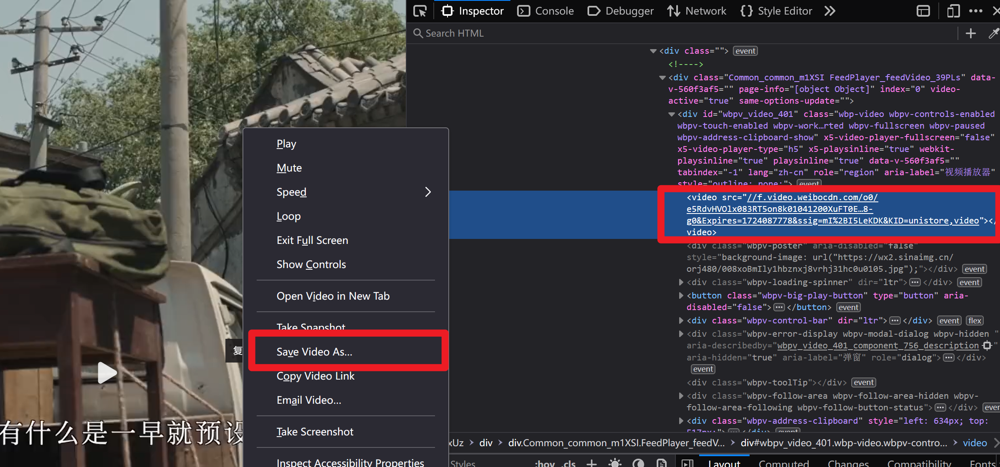
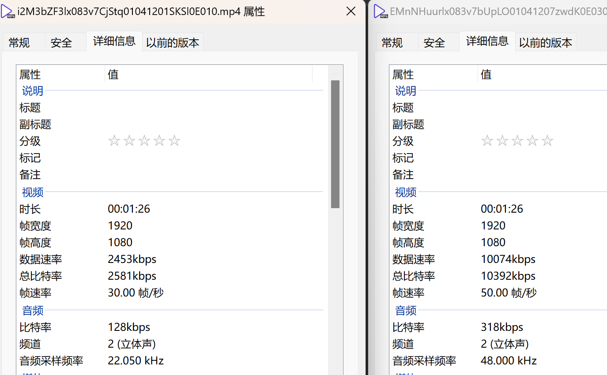
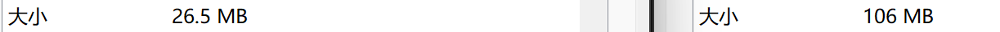

首次编辑：2024/8/19/23:36
最后编辑：2024/8/20/00:44
因为搞了个简易视频壁纸命令行程序，所以要开始收集视频了。
在微博上白嫖视频，最简单的方式当然是用现成的工具。
这两个工具都可以下载。
不过作为一个程序员，总是好奇背后的原理。而且我也想学会自己白嫖，就不用求人了。
了解html页面的话，肯定最先想到的是在浏览器里按下ctrl + shift + C，然后点击目标视频，找到对应的元素，然后寻找视频的url。
在微博里，视频的标签如下：
<video data-v-560f3af5="" class="wbpv-tech" playsinline="playsinline" webkit-playsinline="true" x5-playsinline="true" x5-video-player-type="h5" x5-video-player-fullscreen="false" id="wbpv_video_455_html5_api" tabindex="-1" preload="meta" src="//f.video.weibocdn.com/o0/g4Cr4fYjlx083Ic6jb3i010412018X9d0E010.mp4?label=mp4_1080p&template=1920x1080.25.0&media_id=4877088713539648&tp=8x8A3El:YTkl0eM8&us=0&ori=1&bf=4&ot=h&ps=3lckmu&uid=6xTbLC&ab=,8143-g0,8013-g0,3601-g19,7598-g0&Expires=1724082476&ssig=K4%2BrYO4AG7&KID=unistore,video"></video>
虽然乱七八糟的，但是还是可以找到我们想要的url，也就是src="后面的内容，在这里是
//f.video.weibocdn.com/o0/g4Cr4fYjlx083Ic6jb3i010412018X9d0E010.mp4?label=mp4_1080p&template=1920x1080.25.0&media_id=4877088713539648&tp=8x8A3El:YTkl0eM8&us=0&ori=1&bf=4&ot=h&ps=3lckmu&uid=6xTbLC&ab=,8143-g0,8013-g0,3601-g19,7598-g0&Expires=1724082476&ssig=K4%2BrYO4AG7&KID=unistore,video
于是我们可以在浏览器的输入框中输入这个url，然后不出意外的话，就要看到403了。
我后来了解到这是“防盗链”机制搞的鬼。
比如我在我的博客里引用了微博的视频，那么访客进入我的网站之后，video标签就会向微博发送请求以获取这个视频，于是微博用自己的服务器对这个请求进行了处理，但结果却返回到了我的博客里。换句话说微博成了为了打工的了，万恶的资本家们肯定不会这么好心啊，所以这些资源的拥有者们往往会采用某些技术手段来防止像我这种盗用url的家伙，这就是所谓的“防盗链”。
技术毕竟是人创造的，有人创造，就会有人知道怎么破解。
在网上看到的比较多的说，为了防盗链，这些网站会在网站中使用referrer标识来记录这个请求资源的请求是不是来自自家的域名，于是咱们可以在自己的网页中写上html标签：
<meta content="never" name="referrer">
来关闭防盗链。
也有人说这么写：
<meta content="no-referrer" name="referrer">
于是我腰杆子瞬间直了起来，兴冲冲写了个html文件：
<!DOCTYPE html>
<html>
<head>
<meta content="never" name="referrer">
<title>test</title>
</head>
<body>
<video src="https://f.video.weibocdn.com/o0/i2M3bZF3lx083v7CjStq01041201SKSl0E010.mp4?label=mp4_1080p&template=1920x1080.25.0&media_id=4874117988679687&tp=8x8A3El:YTkl0eM8&us=0&ori=1&bf=4&ot=h&ps=3lckmu&uid=6xTbLC&ab=,8143-g0,8013-g0,3601-g19,7598-g0&Expires=1724074020&ssig=OgFaj88BL2&KID=unistore,video"></video>
</body>
</html>
然后不出意外的话，意外就来了，结果视频还是没出现。按下F12打开控制台，发现还是403了。
于是瞬间又不牛逼了。可能是微博的程序员们比较屌，还有什么更高级的技术用在这了。没办法，还是斗不过资本家，这个问题就等以后有兴趣再研究了吧……
浏览器本身是支持用户下载浏览器中显示的视频的，只需要右击视频，就会有保存视频的选项。但这些个类似微博的网站，右键之后只会弹出“复制视频地址”，这就是它们防止别人下载视频的最初级方法。
右击鼠标，浏览器是会出现默认的菜单栏的。但是在微博视频为啥出现的是“复制视频地址”？不用像，微博的程序员们自定义了右键处理事件覆盖掉了浏览器的默认右键处理事件。
让视频被右击时依旧触发浏览器的默认右击处理事件，不就可以下载视频了？
于是我略加思索，看了一下那个又臭又长的video标签，突然有了一个想法：微博的程序员不会是通过css类来处理右击事件的吧？
于是我打开微博，ctrl + shift + C选中了一个视频，找到video标签，右击，选择“编辑为html”，然后把出了src之外的属性统统删除：
<body>
<video src="https://f.video.weibocdn.com/o0/i2M3bZF3lx083v7CjStq01041201SKSl0E010.mp4?label=mp4_1080p&template=1920x1080.25.0&media_id=4874117988679687&tp=8x8A3El:YTkl0eM8&us=0&ori=1&bf=4&ot=h&ps=3lckmu&uid=6xTbLC&ab=,8143-g0,8013-g0,3601-g19,7598-g0&Expires=1724074020&ssig=OgFaj88BL2&KID=unistore,video"></video>
</body>

哈哈哈哈！
正当我欣喜若狂，拿着下载好的视频和用那两个网站下载好的视频进行对比时，我突然傻眼了。
左边是我自己下载的，右边是用那两个网站下载的。

大小的差距更是离谱。

即使我把视频质量调整到1080p，还是比从那两个网站下载的的质量要低得多。
而且我自己下载的还是有水印的。而网站下载的没有。
而且我后来发现，如果用“复制视频地址”的那个地址打开视频，就是可以直接右键下载的🥲。
于是我去看了一下那两个网站解析出来的视频的url。
譬如对于某个视频，有如下的一系列url：
1、右键“复制视频地址”得到的：http://t.cn/A6CIU9pi
2、输入链接“1”之后，浏览器显示的url：https://weibo.com/tv/show/1034:4874117988679687
3、video标签的url：//f.video.weibocdn.com/o0/i2M3bZF3lx083v7CjStq01041201SKSl0E010.mp4?label=mp4_1080p&template=1920x1080.25.0&media_id=4874117988679687&tp=8x8A3El:YTkl0eM8&us=0&ori=1&bf=4&ot=h&ps=3lckmu&uid=3ZoTIp&ab=,8143-g0,8013-g0,3601-g19,7598-g0&Expires=1724088955&ssig=FzQh5JRx5z&KID=unistore,video
4、两个网站解析出来的url：https://ad.video.weibocdn.com/o0/EMnNHuurlx083v7bUpLO01041207zwdK0E030?Expires=1724085252&ssig=ne2EcJZIkc&KID=unistore,video
注：解析出来的url似乎是有时限的。写完时“4”已经无法打开了（403）。
对于“3”这个url其实是比较好理解的，在域名之后，i2M3bZF3lx083v7CjStq01041201SKSl0E010.mp4表示请求的文件名，再后面的都是一些请求参数。
对于“4”这个神秘的url，同样在域名之后参数之前的EMnNHuurlx083v7bUpLO01041207zwdK0E030，可能也是一个文件的文件名，只是不带后缀名而已。
但问题在于，如何通过“1”或“2”或“3”中的这些标识了视频资源的各种id（例如“1”的A6CIU9pi、“2”的4874117988679687，“3”的i2M3bZF3lx083v7CjStq01041201SKSl0E010）来得到用于请求“4”的EMnNHuurlx083v7bUpLO01041207zwdK0E030呢。
在微博视频的页面中，按下F12，在“网络”选项卡中寻找EMnNHuurlx083v7bUpLO01041207zwdK0E030，很遗憾，没有任何痕迹。但那两个网站却能够通过“1”、“2”、“3”或者它们的任意排列组合来找到这个神秘的字符串……
我目前的水平没办法想出其中奥秘，只能说，也许这两个网站的作者在微博后端工作过。